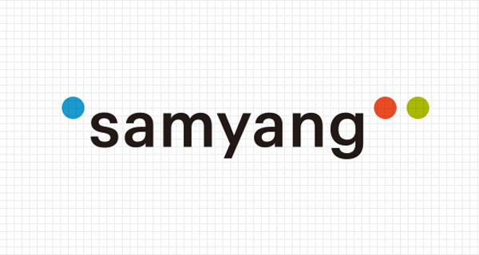
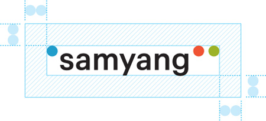
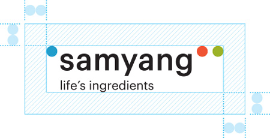

HOME>
그룹소개 >
CI소개
CI소개

“Life’s Ingredients.”
인류의 삶에 풍요와 편리를 전하는 삼양, 세상과 교감하고 고객과 소통하는 삼양
새로운 삼양의 로고는 삶의 순간 순간, 어느 곳에서나 만날 수 있는
삼양의 제품과 서비스를 인용과 대화의 부호인 따옴표를 통해 친근한 비주얼 언어로 해석한 디자인입니다.
인용을 상징하는 작은 따옴표는 많은 제품에 응용되는 삼양의 소재 기술을 의미하며
소통을 상징하는 큰 따옴표는 세상과 교감하고 고객과 소통하는 삼양의 열린 사고와 고객 중심 경영을 상징합니다.
로고에 사용된 칼라 (파란색, 빨간색, 녹색)는 세상을 이루는 빛의 삼원색으로
세상의 기본(Life’s Ingredients)을 만들고 그 기본으로 풍요와 편리를 함께 나누는 삼양을 의미합니다.
- 삼양의 로고는 수정 및 변형을 할 수 없으며, 정해진 규정대로 사용해야만 합니다.
삼양의 로고는 기본형, 중간형과 최소형이 있습니다. 기본형의 사용을 원칙으로 하며
서식류, 유니폼, 사기 등 기본형 적용이 어려운 경우 중간형, 최소형을 사용할 수 있습니다.
삼양의 컬러 시스템은 삼양다움을 전달하는 주요한 요소입니다.
각 제물의 매체 속성에 맞게 지정된 칼라 수치를 사용하되 명도, 채도 등의 차이가 심할 경우 Panton컬러를 기준으로 판단합니다.
RGB 모드에서의 사용은 매체마다 차이가 있을 수 있으므로 제시된 칼라를 기준으로 조정하여 사용합니다.
- Samyang Blue PANTONE 7689 C C75 M22 Y8 R33 G157 B203
- Samyang Red PANTONE 485 C M83 Y88 R240 G83 B51
- Samyang Green PANTONE 383 C C30 Y100 K20 R156 G178 B39